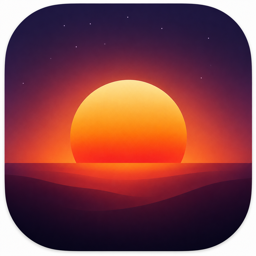

A quieter end to the day.
Questions or feedback? Here's how to reach us.
Sundown collects no data. Everything stays on your device.
Your iPhone becomes a bedside sunset — warm light, then deep red, then dark. Stand it on a bedside surface, tap Start, and let the room dim gently as you fall asleep.